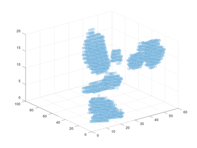
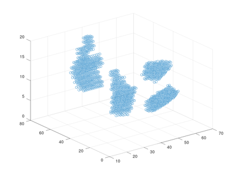
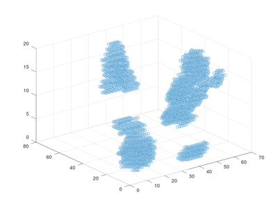
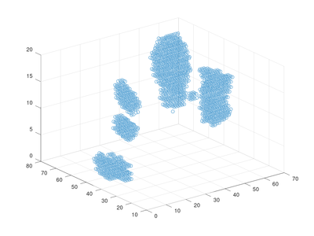

We introduce a new microwave sensor dataset which captures multiple persons performing multiple actions at the same time.
Compared with traditional camera videos, the data set only contains reflection signals without any visible information in a specific 3D space centered at the sensor. Thus, privacy intrusion can be avoided. When we build the data set, we take into account the reality of action recognition. It is likely that multiple actions may happen at the same time, thus we could only provide multiple labels which tell what actions happened in one video' clip [1]. Since labeling data is a time-consuming and labor-intensive job, and the microwave signals are invisible, it is impossible to precisely mark the bounding box of each individual action. In this data set, the labels are only given at the level ofvideo' clip [1].
In contrast to most camera videos and a few small wireless data sets that only provide single-person actions, our data set provides a large number of multi-person actions following the recent work for multi-person action recognition in 360-degree videos [J. Li, et al., WACV20] . Thus, this data set can be used as a benchmark for action recognition in microwave sensors.
video' clip: It is worth noting that we do not use any real videos for learning. The word ofvideo' is only used for easy understanding to denote contiguous frames of 3D spatial signals.We invited ten volunteers to join the data set collection at five places with five sensors. These sensors are mounted on the ceiling or on the wall with different background noise and viewpoints.
In total, we design ten regular actions, including Wave hands (Wave)',Clap hands (Clap)', Tie the shoes (Tie)',Pick up bag (Pick)', Throw away bag (Throw)',Sit down (Sit)', Stand up (Stand)',Walk (Walk)', Run (Run)', andCarry something (Carry)'. In addition to single-person actions, we also record two-person actions simultaneously, which are difficult to distinguish, such as Walk--Run',Wave--Clap', Tie--Pick', etc. Furthermore, there is also triple-person actions data, such asWalk--Carry--Run'. The 3D sensing space of each sensor is set to 2m x 2m x 1.8m. This means that we collect reflection signals of a 3D space centered at the sensor, with 2 meters in length, 2 meters in width, and 1.8 meters in height.
The number of frames for each data ranges from 34 to 79. For each action data in each mini-batch, we randomly sample 32 continuous frames. Thus, the form of each data for training and testing are both 32x20x80x80.
The image is a simple visualization of one item in corresponding folder. And the data item in folder could be read with MATLAB. The corresponding videos are sampled synchronously with a camera.
[carry-throw-sit.png] | [run-pick-wave.png] | [stand-walk-clap.png] | [wave-clap-walk.png]
[] | [] | [] | []
``TEXT
./ |-- README.md |-- carry-throw-sit.png |-- run-pick-wave.png |-- stand-walk-clap.png |-- wave-clap-walk.png |-- cal_0875.avi |-- cal_2065.avi |-- cal_2935.avi |-- cal_4715.avi |-- carry-throw-sit | |-- 000.mat | |-- 001.mat | |-- 002.mat | |-- 003.mat | |-- 004.mat | |-- 005.mat | |-- 006.mat | |-- 007.mat | |-- 008.mat | |-- 009.mat | |-- 010.mat | |-- 011.mat | |-- 012.mat | |-- 013.mat | |-- 014.mat | |-- 015.mat | |-- 016.mat | |-- 017.mat | |-- 018.mat | |-- 019.mat | |-- 020.mat | |-- 021.mat | |-- 022.mat | |-- 023.mat | |-- 024.mat | |-- 025.mat | |-- 026.mat | |-- 027.mat | |-- 028.mat | |-- 029.mat | |-- 030.mat | |-- 031.mat | |-- 032.mat | |-- 033.mat | |-- 034.mat | |-- 035.mat | |-- 036.mat | |-- 037.mat | |-- 038.mat | |-- 039.mat | |-- 040.mat | |-- 041.mat | |-- 042.mat | |-- 043.mat | |-- 044.mat | |-- 045.mat | |-- 046.mat | |-- 047.mat | |-- 048.mat | |-- 049.mat | |-- 050.mat | |-- 051.mat | |-- 052.mat | |-- 053.mat | |-- 054.mat | |-- 055.mat | |-- 056.mat | |-- 057.mat | |-- 058.mat | -- 059.mat |-- run-pick-wave | |-- 000.mat | |-- 001.mat | |-- 002.mat | |-- 003.mat | |-- 004.mat | |-- 005.mat | |-- 006.mat | |-- 007.mat | |-- 008.mat | |-- 009.mat | |-- 010.mat | |-- 011.mat | |-- 012.mat | |-- 013.mat | |-- 014.mat | |-- 015.mat | |-- 016.mat | |-- 017.mat | |-- 018.mat | |-- 019.mat | |-- 020.mat | |-- 021.mat | |-- 022.mat | |-- 023.mat | |-- 024.mat | |-- 025.mat | |-- 026.mat | |-- 027.mat | |-- 028.mat | |-- 029.mat | |-- 030.mat | |-- 031.mat | |-- 032.mat | |-- 033.mat | |-- 034.mat | |-- 035.mat | |-- 036.mat | |-- 037.mat | |-- 038.mat | |-- 039.mat | |-- 040.mat | |-- 041.mat | |-- 042.mat | |-- 043.mat | |-- 044.mat | |-- 045.mat | |-- 046.mat | |-- 047.mat | |-- 048.mat |-- 049.mat |-- stand-walk-clap | |-- 000.mat | |-- 001.mat | |-- 002.mat | |-- 003.mat | |-- 004.mat | |-- 005.mat | |-- 006.mat | |-- 007.mat | |-- 008.mat | |-- 009.mat | |-- 010.mat | |-- 011.mat | |-- 012.mat | |-- 013.mat | |-- 014.mat | |-- 015.mat | |-- 016.mat | |-- 017.mat | |-- 018.mat | |-- 019.mat | |-- 020.mat | |-- 021.mat | |-- 022.mat | |-- 023.mat | |-- 024.mat | |-- 025.mat | |-- 026.mat | |-- 027.mat | |-- 028.mat | |-- 029.mat | |-- 030.mat | |-- 031.mat | |-- 032.mat | |-- 033.mat | |-- 034.mat | |-- 035.mat | |-- 036.mat | |-- 037.mat | |-- 038.mat | |-- 039.mat | |-- 040.mat | |-- 041.mat | |-- 042.mat | |-- 043.mat | |-- 044.mat | |-- 045.mat | |-- 046.mat | |-- 047.mat | |-- 048.mat | |-- 049.mat | |-- 050.mat | |-- 051.mat | |-- 052.mat | |-- 053.mat | |-- 054.mat | |-- 055.mat | |-- 056.mat | |-- 057.mat | -- 058.mat-- wave-clap-walk |-- 000.mat |-- 001.mat |-- 002.mat |-- 003.mat |-- 004.mat |-- 005.mat |-- 006.mat |-- 007.mat |-- 008.mat |-- 009.mat |-- 010.mat |-- 011.mat |-- 012.mat |-- 013.mat |-- 014.mat |-- 015.mat |-- 016.mat |-- 017.mat |-- 018.mat |-- 019.mat |-- 020.mat |-- 021.mat |-- 022.mat |-- 023.mat |-- 024.mat |-- 025.mat |-- 026.mat |-- 027.mat |-- 028.mat |-- 029.mat |-- 030.mat |-- 031.mat |-- 032.mat |-- 033.mat |-- 034.mat |-- 035.mat |-- 036.mat |-- 037.mat |-- 038.mat |-- 039.mat |-- 040.mat |-- 041.mat |-- 042.mat |-- 043.mat |-- 044.mat |-- 045.mat |-- 046.mat |-- 047.mat |-- 048.mat |-- 049.mat |-- 050.mat |-- 051.mat |-- 052.mat |-- 053.mat |-- 054.mat |-- 055.mat |-- 056.mat |-- 057.mat |-- 058.mat |-- 059.mat |-- 060.mat `-- 061.mat
``
{kind=link}
{kind=link}
{kind=link}
{kind=link}